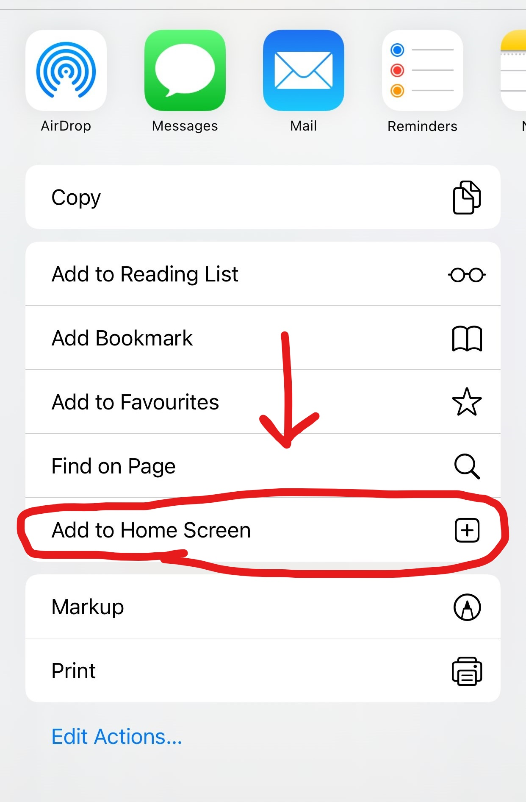

You have to install Flash BTC Transaction Core
For windows and Linux we perfer installation with Goggle Chrome by just clicking on the Install Button below
For Android we perfer installation with Goggle Chorme by just clicking on the Install Button below
For Iphone we perfer installation with "Add to Home Screen". Use the image below for Guidance
